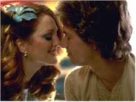
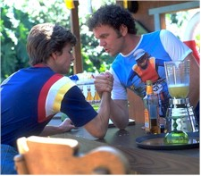
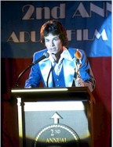
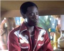

Contents | Features | Reviews | News | Archives | Store |
 |
|
| Movie Credits | Buy It! |
Boogie Nights
Review by Eddie Cockrell
Posted 17 October 1997
| Directed by Paul Thomas Anderson Starring Mark Wahlberg, Julianne Moore, Screenplay by Paul Thomas Anderson |
Bold, exuberant and assured, Paul Thomas Anderson's Boogie Nights charts the rapid rise, brutal fall and peculiar redemption of an extended family of "exotic picture" makers in the tacky disco milieu of Southern California in the late 1970s and early 1980s. With its emphasis on pornography's people and period – not, as will be assumed, the process – the film is strongly reminiscent of the distinctly American sagas Nashville, GoodFellas, City of Hope and Pulp Fiction (big, complicated yet personal movies all, as this one very much is). Arguably the most important American film of the year to date, Boogie Nights flawlessly recreates an era of musical and moral excess in the service of a cautionary story presented as a rich, complex tapestry that is accomplished enough to demand and reward repeated viewings.
While relaxing with his live-in lead actress Amber Waves (Julianne Moore) at the Hot
Traxx nightclub deep in the San Fernando Valley some time in 1977,  laconic adult filmmaker
Jack Horner (Burt Reynolds) plays a hunch and introduces himself to busboy Eddie Adams
(Mark Wahlberg). He soon learns that the young man is particularly well-endowed
("everyone's blessed with one special thing," Eddie tells his grateful
girlfriend), slowly pulling him into the cottage industry of skinflicks he shoots in the
basement of the rambling, sumptuously seventies house that also serves as party central
for the increasingly large gaggle of hangers-on. The director and star serve as bizarre
parental substitutes to their large and apparently ever-shifting brood, prominent among
whom are the spectacularly dim-witted Reed Rothchild (John C. Reilly), the
elaborately-dressed Buck Swope (Don Cheadle), and high school dropout Rollergirl (Heather
Graham) – so named because she never takes off her skates, even for sex. The jaded
crew is led by the constantly cuckolded Little Bill (William H. Macy) – whose wife is
played by real-life porn queen Nina Hartley in just one of the film's sly stunts of
secondary casting – and includes soundman and general worshipful go-fer Scotty J.
(Philip Seymour Hoffman), who from all evidence has little or no self-esteem and a huge
crush on Eddie.
laconic adult filmmaker
Jack Horner (Burt Reynolds) plays a hunch and introduces himself to busboy Eddie Adams
(Mark Wahlberg). He soon learns that the young man is particularly well-endowed
("everyone's blessed with one special thing," Eddie tells his grateful
girlfriend), slowly pulling him into the cottage industry of skinflicks he shoots in the
basement of the rambling, sumptuously seventies house that also serves as party central
for the increasingly large gaggle of hangers-on. The director and star serve as bizarre
parental substitutes to their large and apparently ever-shifting brood, prominent among
whom are the spectacularly dim-witted Reed Rothchild (John C. Reilly), the
elaborately-dressed Buck Swope (Don Cheadle), and high school dropout Rollergirl (Heather
Graham) – so named because she never takes off her skates, even for sex. The jaded
crew is led by the constantly cuckolded Little Bill (William H. Macy) – whose wife is
played by real-life porn queen Nina Hartley in just one of the film's sly stunts of
secondary casting – and includes soundman and general worshipful go-fer Scotty J.
(Philip Seymour Hoffman), who from all evidence has little or no self-esteem and a huge
crush on Eddie.
On the strength of the almost inhuman stamina of his "one special thing" and naive eagerness to please, Eddie is an instant success, changing his name to Dirk Diggler and dreaming up a kind of X-rated James Bond character, Brock Landers, and his useless sidekick Chest Rockwell (ineptly played by Reed, who has become Dirk's faithful friend).
Horner's films are bankrolled by an affable but eccentric man who insists on being called "The Colonel James" (the late Robert Ridgely). But as the 1970s slide into the 1980s (almost the entire first hour of the film takes place in 1977) and drugs and egos begin to unravel the group, the sinister Floyd Gondolli (Philip Baker Hall) persuades Jack to enter the new world of videotape and mail order. After a public falling out Dirk splits with Horner for an ill-conceived stint as a power balladeer and desperate hustler, while Buck is turned down for a loan and finances his dream of a stereo store with money he steals after surviving a midnight bloodbath at a donut shop. Amber sinks into a cocaine-fueled psychosis and loses visitation rights to her young son, while Horner and Rollergirl crap out in their effort to create a sort of rolling video whorehouse. Eventually, after a spectacularly botched drug hustle that results in the death of freebasing wildman Rahad Jackson (Alfred Molina), Dirk returns to Jack's house and resumes his career, glimpsed in a final shot as memorable as it is shockingly funny (think Raging Bull with a "Living Thing").
There is apparently a lot of personal history in Boogie Nights, which helps explain how a filmmaker who was still an infant when Melanie's "Brand New Key" (one of over thirty period songs used in the film) first hit the charts has such a knack for the milieu. "I have very specific memories of the way Los Angeles looked and felt," says Anderson, who is 26. "The story dictated the time, and it just happened to set itself in a wonderful period of music and fashion." He even seems to have his own extended filmmaking family, holding over key cast and crew from his moody debut Hard Eight (1997). Prior to that, at the tender age of 17, he'd made a short version of what is now Boogie Nights – The Dirk Diggler Story, itself apparently inspired in part by the real-life adventures of legendary porn star and high-profile burnout John "Johnny Wadd" Holmes (actually mentioned in passing), who died of AIDS in 1985 – with mentor Ridgely (to whom the film is dedicated: remember him as gameshow host Wally "Mr. Love" Williams in Jonathan Demme's Melvin and Howard?) in the Burt Reynolds role. Anderson was no stranger to show business as a child, although his exposure seems to have been somewhat unique: his late father, Ernie (Boogie Nights is also dedicated to him), did those cheerfully lewd "Love Boat" voiceovers on TV and was Cleveland's beloved midnight horror movie host Ghoulardi (a name that now graces his son's production company). This also explains the essential fondness Anderson has for his characters, who "are all searching for their dignity. They're just trying to find themselves."
One prominent cast member who's found himself is Reynolds: the former Cosmo centerfold (funny how his early career looks a lot like the 1970s version of Mark Wahlberg's underwear ads), hasn't been this focused, assured and, most importantly, unmannered, since John Boorman's Deliverance a quarter century ago. And while he's so far been pretty self-deprecating about the role of Jack ("I got socks older than him," he says of Anderson), Reynolds stands a very good chance of getting at least a Best Supporting Actor nod – can anybody satisfactorily explain the nomination criteria? – for this masterfully understated, career-topping work.
Similarly, Wahlberg is surprisingly good as Dirk, managing to walk the fine line between naivete and world-weariness with seeming ease. Wide-eyed one minute, reptilian the next, it is a performance essential to the success of the movie: without his clear journey from innocence to hustling there'd be no sympathy from the audience and, in effect, no film.
The material demanded fearless performers (seldom has ignorance been written and played so eloquently), and chief among them are Julianne Moore as Amber Waves and John C. Reilly as the astonishingly stupid Reed Rothchild, profoundly damaged people blissfully caught in the web of their own inner deceit (everybody's somebody else: in addition to Eddie's absurd new moniker, Amber's real name is Maggie, Rollergirl is Brandy, and who knows if "Jack Horner" is authentic?). William H. Macy serves to jolt the film from one decade to another in the film's smallest major role, while the aforementioned supporting cast includes composer Michael Penn as a recording engineer (he also did the music for Hard Eight, some of which seems to have been imported to Boogie Nights), Robert Downey Sr. as recording studio manager Burt, John Doe as Amber's ex-husband, and Jack Riley (Bob Newhart's Mr. Carlin) as a lawyer. And in one of those always-fascinating Hollywood coincidences, both stars of the independent Incredibly True Adventures of Two Girls in Love show up in Boogie Nights, Nicole Ari Parker as scenester Becky Barnett and Laurel Holloman (so good in The Myth of Fingerprints) as Eddie's blink-and-you'll-miss-her girlfriend.
The visual style of the film is distinctive and kinetic, with the long, often whippy tracking shots Anderson toyed with in Hard Eight dominating the action (Robert Elswit, who just finished the new Bond film Tomorrow Never Dies, shot both films). And Hard Eight's post-production supervisor, Dylan Tichenor, has graduated to the editing suite and gives the movie a staccato, punchy pace. But the hardest jobs must've been those of Bob Ziembicki and Mark Bridges (another Hard Eight alum), whose production and costume design, respectively, are authentic down to a groovy 8-Track player and the "authentic imported Italian nylon" of Dirk's shirts.
Boogie Nights shares the same music supervisor (Karen Rachtman) as Reservoir Dogs and Pulp Fiction, so it's no surprise that the period tunes work so well. But rarely has a film used so much source music as such an integral part of the story: at least two-thirds of the more than thirty songs comment directly on the action to which they're scored, from the joyous innocence of Emotions' "Best of My Love" as the movie opens to Elvin Bishop's "Fooled Around and Fell in Love" as Little Bill finds his wife under some guy in Jack's driveway to "Driver's Seat" by Sniff'N'the Tears on New Year's Eve and the frighteningly funny use of Night Ranger's "Sister Christian" as Dirk's drug deal goes downhill fast and the Beach Boys' "God Only Knows" (the only 1960s ringer in the bunch) as the principals struggle to get on with their post-porn lives. Get to the theater early and stay until the end of the credits, as "P.T." Anderson shows his true carny colors with the appropriately titled "The Big Top" providing elegaic prologue and coda to the action. And the soundtrack album (mixed with the same muscle as the movie, both of which sound great in good theaters) features not only Wahlberg and Reilly's stunningly inept "Feel the Heat" from Dirk's singing stage, but as a hidden track (04:48 into the 13th cut, kiddies) the howlingly funny power ballad slaughter "The Touch." One caveat: where, oh where is Heatwave's "Boogie Nights," which charted 20 years ago this month and lent the film it's name? Come to think of it, The Floaters' "Float On" would've worked, or maybe "Strawberry Letter #23," or Andy Gibb's immortal "I Just Want to Be Your Everything," or Pablo Cruise's "Whatcha Gonna Do" ("You don't know a good thing 'til you got it in your hand..."). Clearances must be a frustrating business.
The film isn't without its annoyances, most notably its dependence on third-act absurdist violence of the Tarantino school that punches home the message of moral retribution but departs severely from the tone of the first two-thirds of the film and a tendency to give short shrift not only to the minority characters – Cheadle's Buck isn't seen in any sex scenes but is the only character publicly humiliated as a pornographer – but the specter of disease and dissipation that plagued Holmes and who knows how many other triple X stars.
Regarding the morality of the film, there's irony aplenty in Boogie Nights, but not the pious, hipper-than-thou kind found in most of the lesser junk that's passed for cool since Pulp Fiction influenced what seems like every film student in the world. No, Boogie Nights likes itself enough to exhibit a genuine fondness for the era while at the same time condemning its infantile superficiality. These people are as doomed as the majority of passengers on the Titanic – very likely the fall's other must-see movie – but the only difference is that these poor bastards don't see the end coming until it's way too late to save themselves.
A bracing antidote to the likes of Saturday Night Fever and the whole revolting disco movement, the tone of Boogie Nights is what, in the end, makes it great: it is a story that could only have happened in America (will it play as poorly overseas as the less courageous People vs. Larry Flynt?), and could only have taken place during the peculiar years that straddled two decades and mark, for now, the depths of greed, decadence, self-delusion and lack of taste and sense to which a great and spoiled society could sink. In this regard, Boogie Nights aims high and scores often. Ironically, the lower it goes, the more eloquent it becomes.
Contents | Features | Reviews | News | Archives | Store
Copyright © 1999 by Nitrate Productions, Inc. All Rights Reserved.